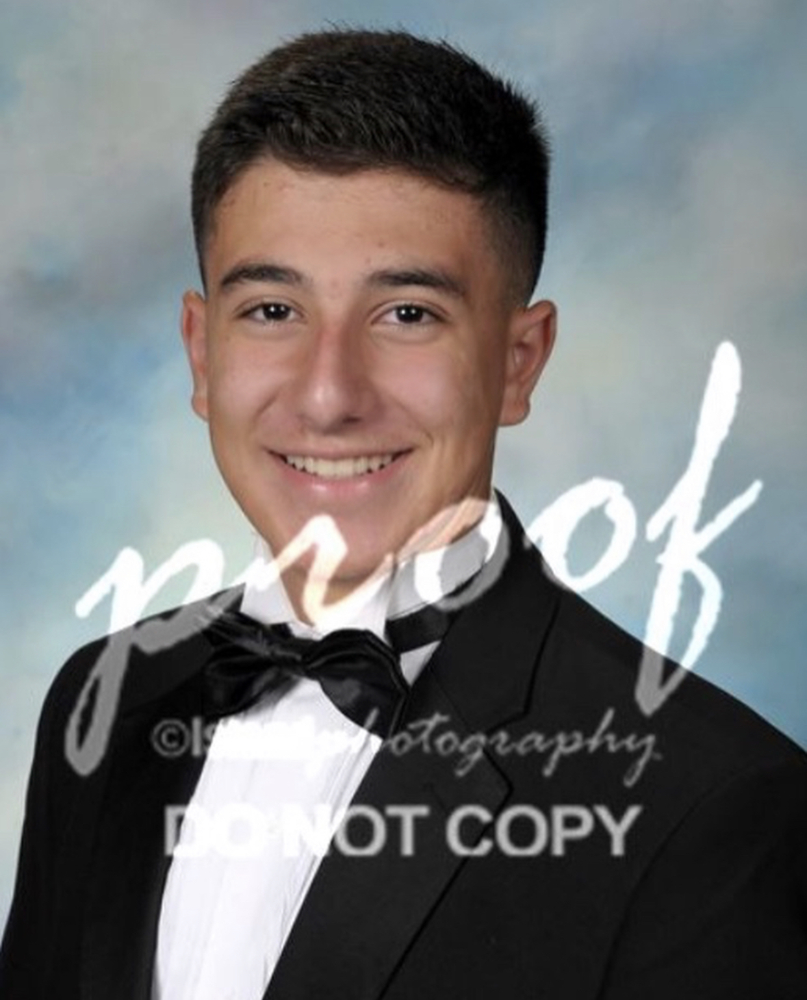

The Great Compromise Party
Bridging the gap one step at a time

Presidential Candidate:
Hello my name is Joseph Guido and I will be running as the president of the United States.
I am 35 years of age,
I grew up in Long Island New York and the party I will be running as part of the Great Compromise Party.
I completed my finance
degree at Dartmouth College and was at the top of my class. I also studied abroad for a year to examine
other political systems
in order to figure out ways to better our government as a whole. I have 2 years of military service,
I served for two years directly
after high school. I have also been a senator of New York for two terms. It has further allowed for
my career in politics to be much
more effective and have a better chance at winning presidency.
Vice Presidential Candidate:

Hello my name is Dylan Gianikos and I will running as the Vice President to Joseph Guido
of the Great Compromise.
I am 35 years of age, and I am from Long Island, New York but currently reside in Houston, Texas. I
graduated from Rice University
with Bachelors in Mathematics and a Masters in Economics. Currently I represent Texas second
congressional district. While in Congress
I was appointed to the Homeland Security Committee and the Budget Committee.
While in these committee it was my goal to focus border
security and implementing Fiscal policies. I will continue to focus on these
issues as I continue to server the great people of this country.
Campaign Manager:

Hello, my name is Jesse Pineda and I am the campaign manager for The Great Compromise
Party. I am 48 years old and grew
up in Long Island, New York. I completed my bachelors and masters degree in Political Science at
Georgetown University. I have managed
Barack Obamas successful president campaign as well as his 2012 re-election. In 2016, I also
managed Chuck Schumers re-election
campaign for New York.